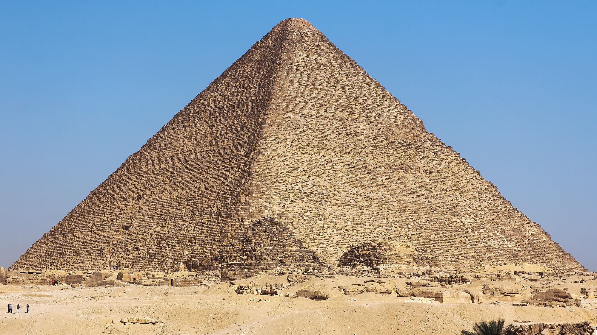
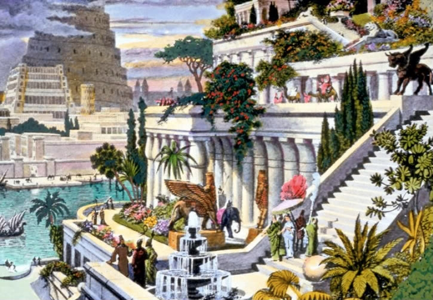
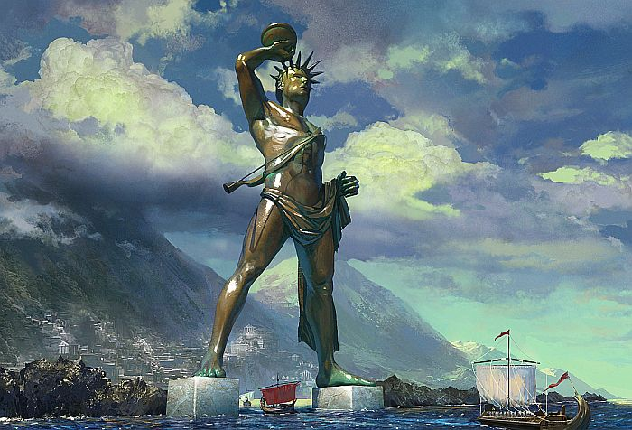
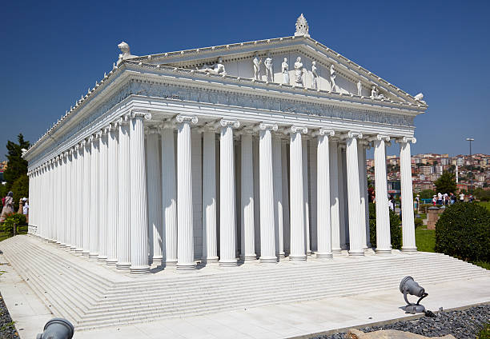
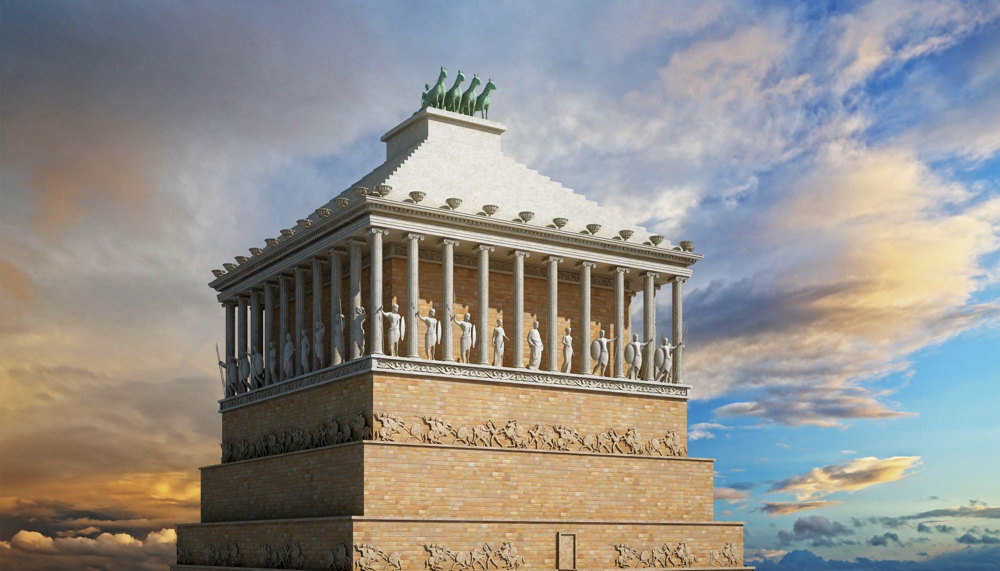
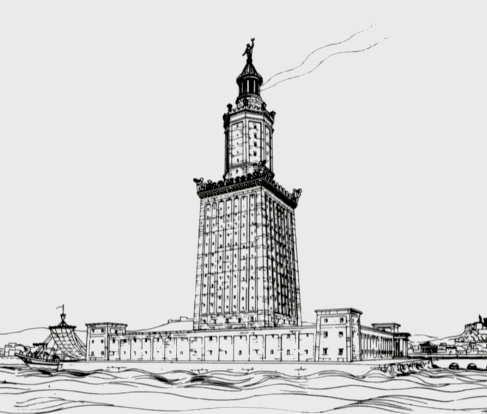

Cudy świata







Wielka Piramida w Gizie, zbudowana około 2580-2560 p.n.e., jest jedynym z siedmiu cudów świata, który przetrwał do dzisiaj. Jest to największa z trzech piramid w Gizie i była pierwotnie grobowcem faraona Cheopsa.
Informacje o 7 cudach świata
| Nazwa | Lokalizacja | Okres powstania |
|---|---|---|
| Wielka Piramida w Gizie | Egipt | 2580-2560 p.n.e. |
| Wiszące Ogrody Babilonu | Mezopotamia | Ok. 600 p.n.e. |
| Posąg Zeusa w Olimpii | Grecja | Ok. 435 p.n.e. |
| Świątynia Artemidy w Efezie | Turcja | Ok. 550 p.n.e. |
| Mauzoleum w Halikarnasie | Turcja | Ok. 350 p.n.e. |
| Kolos Rodyjski | Grecja | 292-280 p.n.e. |
| Latarnia Morska na Faros | Egipt | Ok. 280 p.n.e. |
Ciekawostki
- Tylko Wielka Piramida w Gizie przetrwała do dzisiaj w całości.
- Wiszące Ogrody Babilonu mogą być mitem, ponieważ brak dowodów archeologicznych na ich istnienie.
- Posąg Zeusa w Olimpii został zniszczony podczas pożaru.
Dlaczego to są cuda świata?
- Przedstawiają najwyższy kunszt architektoniczny swoich czasów.
- Były symbolem potęgi i prestiżu starożytnych cywilizacji.
- Ich historia i legenda inspirują ludzi na całym świecie do dziś.